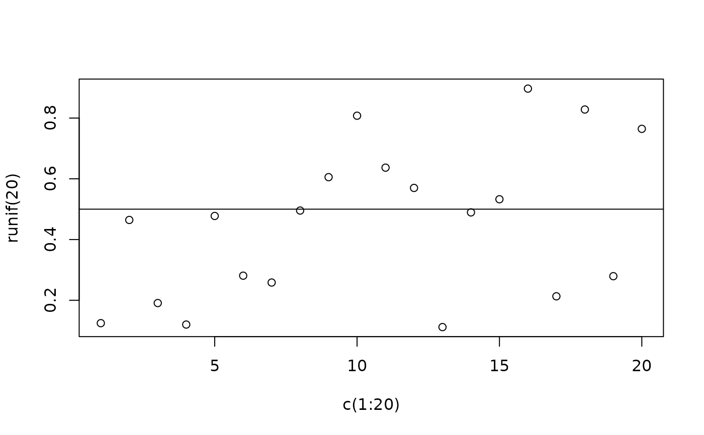

Summarise the display list for a graphics device
summary.recordedplot.RdBase graphics are created using a series of calls to C routines. This function gathers the names of these calls and the values of the arguments as supplied. Names of the arguments are then added. The display list must be retrieved before the graphics device is closed, but this could be stored for later summarisation.
Usage
# S3 method for recordedplot
summary(object, ...)Arguments
- object
the display list created by recordPlot().
- ...
necessary argument for the method; currently ignored
Value
A named list of named vectors. Names of list elements are the C function calls used in plotting the graph on the graphics device; the names for the vectors are dependent on which C functions are called, but are the argument names as per the R function most closely associated with that C call.
Examples
plot(x=c(1:20), y=runif(20))
abline(h=0.5)

p = recordPlot()
summary(p)
#> $C_plot_new
#> NULL
#>
#> $palette2
#> [1] -16777216 -9743393 -11546527 -1665246 -1711576 -4453427 -15677451
#> [8] -6381922
#>
#> $C_plot_window
#> [1] "1" "20" "0.0602548848837614"
#> [4] "0.970144883962348" "" NA
#>
#> $C_plotXY
#> x1 x2 x3
#> "1" "2" "3"
#> x4 x5 x6
#> "4" "5" "6"
#> x7 x8 x9
#> "7" "8" "9"
#> x10 x11 x12
#> "10" "11" "12"
#> x13 x14 x15
#> "13" "14" "15"
#> x16 x17 x18
#> "16" "17" "18"
#> x19 x20 y1
#> "19" "20" "0.444637111155316"
#> y2 y3 y4
#> "0.885540695860982" "0.194849986582994" "0.0824026030022651"
#> y5 y6 y7
#> "0.708783779526129" "0.828205068362877" "0.805444668745622"
#> y8 y9 y10
#> "0.207197023555636" "0.48976288526319" "0.0943251645658165"
#> y11 y12 y13
#> "0.364576880587265" "0.672069955151528" "0.49421311262995"
#> y14 y15 y16
#> "0.970144883962348" "0.789180602878332" "0.701015816535801"
#> y17 y18 y19
#> "0.49572887015529" "0.42413509497419" "0.146360349608585"
#> y20 xlab ylab
#> "0.0602548848837614" "c(1:20)" "runif(20)"
#>
#> "p" "1" "solid"
#>
#> "black" NA "1"
#>
#> "1"
#>
#> $C_axis
#> [1] "1" "TRUE" NA NA "FALSE" NA "solid" "1" "1"
#> [10] NA NA NA
#>
#> $C_axis
#> [1] "2" "TRUE" NA NA "FALSE" NA "solid" "1" "1"
#> [10] NA NA NA
#>
#> $C_box
#> which lty
#> "1" "solid"
#>
#> $C_title
#> [1] "c(1:20)" "runif(20)" NA "FALSE"
#>
#> $C_abline
#> [1] "0.5" "FALSE" "black" "solid" "1"
#>
rm(p)